2006 평화 위를 걷다 - 베트남 젊은 작가 16인의 드로잉 전
평화 위를 걷다 - 신 짜오 마이 달링(안녕! 내 사랑)
Pace on the Peace - Xin Chao My Darling
2006_1017 ▶ 2006_1031
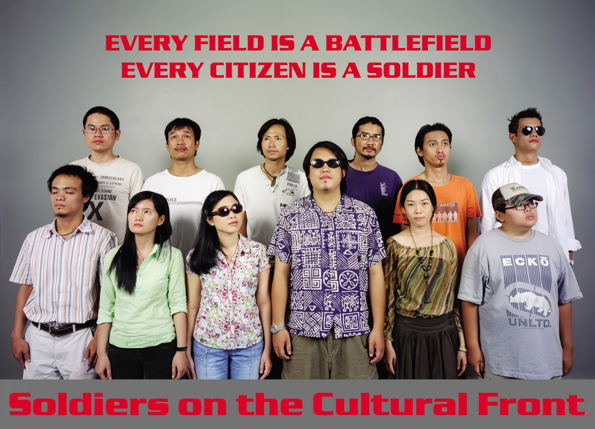
앞줄 : Tran Dan, Thuy Duyen, Ly Hoang Ly, Nguyen Nhu’ Huy, Nguyen Dao An Ha, Duc Thinh
뒷줄 : Ngo Dinh Truc, Ly Doi, Ngo Luc, Nguyen Thanh Truc, Nguyen Pham Trung Hau, Richard Streitmatter Tran.
스톤앤워터는 '평화 위를 걷다 2006' - 베트남 젊은 작가 16인의 드로잉 전 '신 짜오 마이 달링(Pace on the Peace - Xin Chao My Darling)'전을 지난 2006년 10월 17일부터 한 달간 진행했다. 이 전시는 우리가 상상하고 있는 베트남 전쟁과 오랜 공산체제에서 시장을 개방하고 자본주의를 수용하고 급속하게 발전하고 있는 신흥 경제 계발국가 베트남에 대한 스테레오 타입을 깨고 베트남의 젊은 작가들이 경험해왔고 바라보고 있는 베트남 사회에 대한 다양한 측면을 보여주었다.
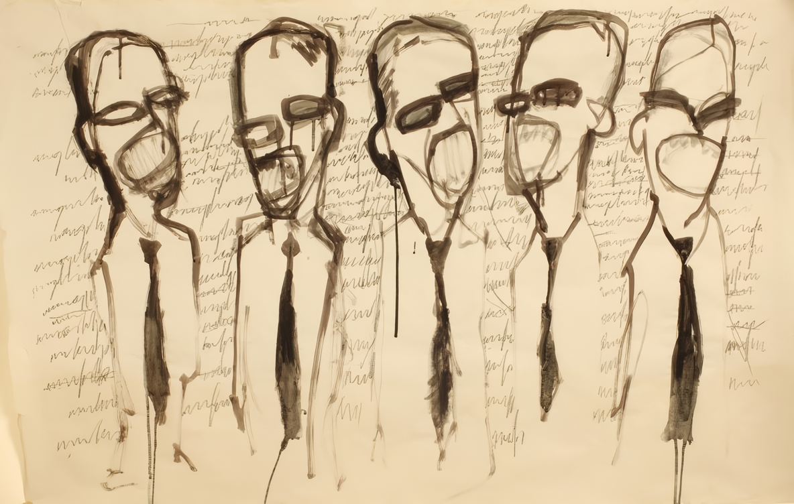
■ Nguyen Thanh Truc
그들은 무엇을 말하고 있는가? 나는 텔레비전 프로그램에서 정지된 이미지와 같은 조용한 순간, 어떤 소리도 내지 않는, 말하고 있는 사람들의 이미지를 원했다. 그리고 나는 마치 그래피티처럼 알 수 없는 말들을 벽에 그렸다. 수천 년이 지나도 사람들은 여전히 말하고, 싸우고, 계속해서 죽어가고 있을 것이다. 내 맘 속에 질문하나가 맴돈다: 그들은 무엇에 대해 말하고 있는가?
I want to have an image of people talking without any sound, a moment of silent, like a paused image of a television program. I Sketched on the wall like a grafiti, with non-sense unrecognizable words. Thousand years have passed by, but people still keep on talking, fighting, and continuingly dying. One question lingering on my mind: What are they talking about?
1969년 사이공에서 출생한 작가는 호치민시 미술대학을 졸업했다. 3회의 개인전을 열었으며, 프랑스, 한국에서의 그룹전에 참여하였다. 2000년 가나아트갤러리에서 열린 <한-베 평화전시회>와 <아시아의 지금>전에 초청되었다. 작가개인의 사색을 추상적인 이미지에 담아내고 있다.
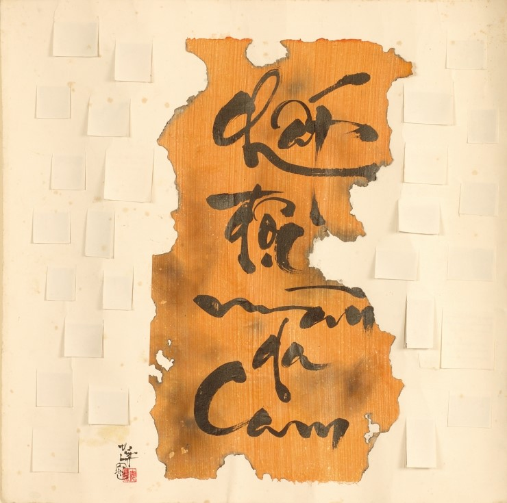
■ Nguyen Dao An Ha
베트남 전쟁의 많은 부분들이 나에게는 의문으로 남아 있다. 하지만 전쟁의 희생자들 특히 오렌지 살충제로 인해 감염된 사람들에 대해서는 잘 알고 있다. 나는 이번 전시를 통해 나의 작품을 그들을 위한 전시로 바치고자 한다.
For me, many aspects of the Vietnamese war are in question. What I have known very well is its victims, especially those were affected by orange toxicant. I contribute my art work in this exhibition for them.
Nguyen Dao An Ha는 설치 작업을 주로 하고 있다. 그녀는 최근에 Arrow그룹에 가입했다. An Ha의 관심분야는 예술의 사회적인 측면으로, 특히 아이들과 관련된 문제들이다. 그녀는 애로우 그룹과 함께 많은 그룹전에 참가했고 2006년 5월 호치민시에 있는 Van Thanh 공원에서 호치민시 예술 연합회 주관으로 개최된 호치민시 젊은 예술가 설치전에 참여했다.
Nguyen Dao An Ha is very interested in installation art. Recently she has joint in art group Arrow. An Ha concerns very much to social aspects of art, especially the problems relating to children. She has participated in many group exhibition with Arrow group. The most recent, she has shown her art work in the Hochiminh city young artist installation art exhibition, held by Hochiminh city Art Association at Van Thanh Park, Hochiminh City, may 2006
Email: nguyendaoanhakg@yahoo.com
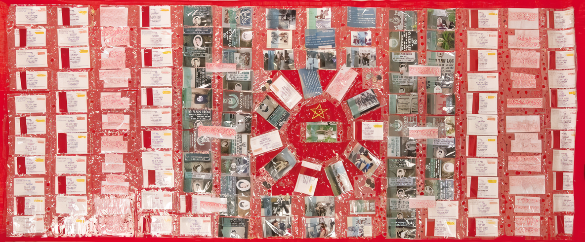
■ Le Quy Anh Hao
나의 작품은 전쟁기념관에 가면서 모아두었던 티켓과 전사한 군인들의 비석을 찍은 사진 이미지들을 혼합한 작품이다. 이러한 혼합물을 통해 나는 전쟁과 그것이 주는 이미지에 대한 관계성에 대해 몇 가지 실험을 해보고 싶었다. 즉 전쟁이라는 실제 결과와 평화로운 시대에 다른 목적으로 사용된 편집된 이미지들 사이에 있는 관계성에 대한 실험이다.
My work for this project was created by mixing many photo images of gravestones that I took in the the cemetery of deceased soldiers and the tickes I collected in War Remnants Museum reserving history. Through this combination, I would like to set some questions about the relationship between war and images about it as well as between the real consequences of war and its edited images that is being used for different purpose in peace time.
Le Quy Anh Hao는 호치민시에 살면서 작업하고 있다. 그에게 현대 미술은 일상생활과 분리될 수 없는 것이고, 우리들 가장 가까운 곳에 있는 것이다. 그는 자신의 이야기를 설명하기 위해 자신의 몸을 사용하는 퍼포먼스 작업을 주로 하고 있다. 퍼포먼스는 그의 열정과 내면의 강한 에너지를 표출하는 데에 있어 만족스런 작업이기도 하다. Le Quy Anh Hao는 대학 때부터 많은 그룹전에 참가했다. 가장 최근에는 호치민시의 폐건물에서 열린 Beta 아트 그룹전에 참가했다.
Le Quy Anh Hao is a contemporary artist living and working in Hochiminh city. Contemporary art, for Le Quy Anh Hao, can not be isolated with everyday life and is something nearest with us. He is very interested in performance art because he like to use his body to explain his stories. Performance art also sastifies his passion and the powerful energy inside him. Le Quy Anh Hao, since his time in university, has participated in many art group exhibition. The most recent art event he has participated is the exhibition of Beta art group at an abandoned building in Hochiminh city.
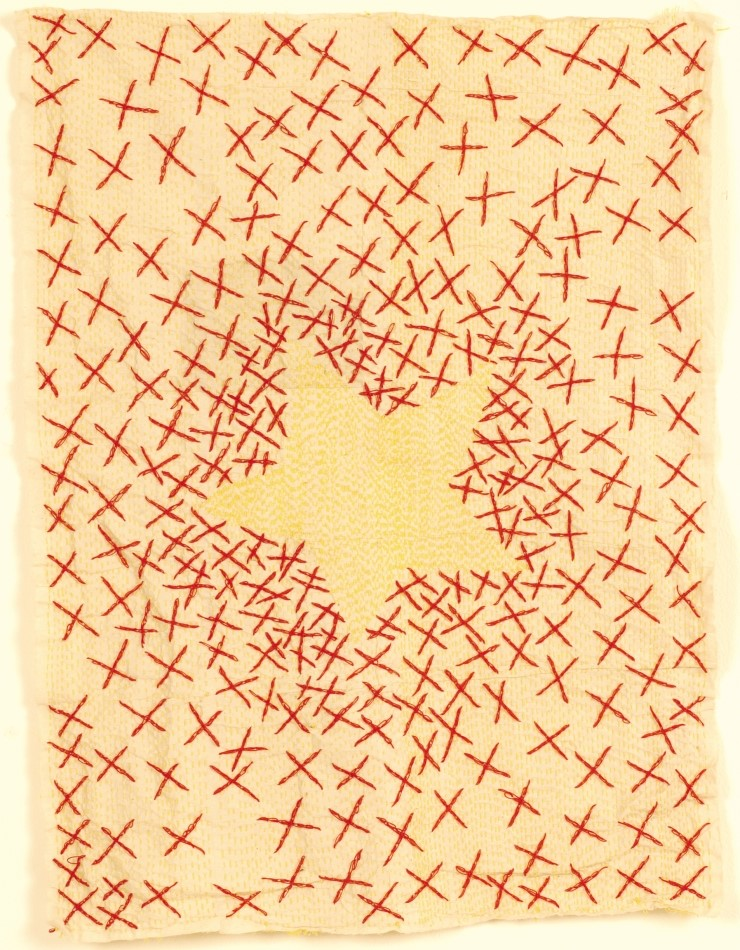
■ Ngo Thi Thuy Duyen
나는 베트남 전쟁이 끝난 후에 태어난 행운아이다. 평화로운 시대에 살아간다는 것은 나의 큰 행복이자 전 삶을 우리나라의 독립과 통일을 위해 바친 나의 조상들에게 늘 감사하도록 해 준다. “붉은 주소 The Red Address"는 내가 고등학교 때 참가했던 정부에서 주관한 프로젝트의 이름이다. 붉은 주소들은 사망한 전쟁 영웅들의 어머니들이나 상이용사가 살고 있는 곳의 주소이다. 이 프로젝트의 첫 번째 임무는 그러한 주소를 찾아 목록으로 정리하는 것이다. 그러한 후에 우리는 지도에서 그 주소에 해당하는 곳을 붉은 펜으로 표시해 두었다. 마지막으로 우리는 그 주소에 살고 있는 사람들에게 우리의 존경을 담은 선물을 보냈다. 이번 전시에서 나의 작품, 베트남 국기는 그 때의 붉은 표시들을 수놓은 것이다. 이 작품을 통해 나는 베트남 국기는 수많은 붉은 주소들에 의해 만들어졌다는 것을 사람들에게 떠올리도록 하고자 함이며, 그것을 결코 잊지 않기 위함이다.
I’m lucky becaue I was born after the Vietnamese war. Living in peace time is my great happiness and it always makes me feel grateful to my ancestors who had contributed all their life for the independence and the unify of my country. “The red address“(Dia chi do) is the name of an initiated-by-government project that I have participated during my high school time. The red adreesses are those where mothers of died heros or where disabled solders now are living. The first mission of us for this project was to look for and to build the lists of those addresses. After that, then we marked each of those addresses on the city map with red pen. Finally, we droped by all those addresses with our gifts to show our restpectfullness. My work in this exhibition, a Vietnamese flag made by being embroidered many red marks is to remind people of that the Vietnamese flag was made by many red addresses and we must never forget it.
Ngo Thi Thuy Duyen 은 후에(Hue) 미술 대학을 졸업했고 많은 그룹전과 워크샵에 참가했다. 가장 최근의 전시로는 호치민 시에 있는 A Ton Duc Thang str에서 개최한 그룹전인 “러쉬 아우어즈 Rush Hours”이다. 그녀는 주로 사회문제들을 퍼포먼스나 설치 작업을 통해 다루고 있다.
Duyen graduated from Hue fine art university. She has participated many group exhibition and workshop. Her most recent exhibition was a group exhibition, “ Rush hours “, with Infiity Hue young artists group, held at 3 A Ton Duc Thang str, Hochiminh city, Vietnam. Her art practice, mostly in performance and installation, usually concerns to social aspects. Email: duyenart@yahoo.com
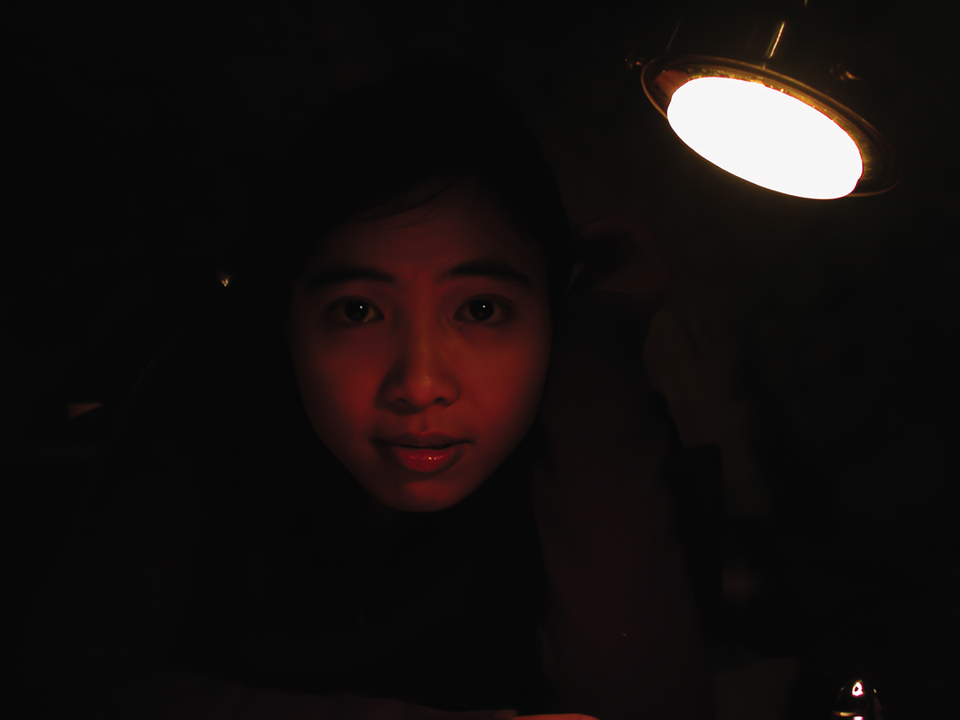
■ Ly Hoang Ly
2003년 가을, 미국 아이오와의 근교에 있는 Roman's -Bootlegger라는 바 안에서. 희미한 불빛과 붉은 벽돌로 이루어진 네 벽, 그리고 낮은 천장은 마치 터널 속에 있는 듯한 인상을 주었다. 기둥에 아이론 틀로 받쳐진 안개 램프들은 각각의 좁은 테이블을 비쳐 주고 있었다. 붉은 불빛은 각 테이블에 앉아 있는 사람의 얼굴만을 비춰주었고, 다른 세세한 것들은 어둠 속에서 희미할 뿐이었다. 손님들은 서로 속삭이고 있었고, 아주 가벼운 소리라도 자칫하면 다른 사람들에게 방해가 될 수 있을 정도로 조용했다. 현실과는 동떨어진 밀폐되고 조용한 분위기 속에 이끌려서 한 베트남 여성 시인이자 미술가는 한국 작가에게 3.5 메가 디지탈 카메라로 자신의 사진을 찍도록 했다.
플래시나 스튜디오 작업 같은 어떤 정교한 기술 없이도 즉석의 스냅 사진은 너무 완벽했고, 두 예술가들은 기뻐서 그것을 각자의 기념품으로 간직하기로 했다. 그 사진과 관련된 한국인 친구의 감정은 알 수 없지만, 베트남 여성작가에게 그 사진은 북부 베트남이 미국 공군들에 의해 폭파당했던 베트남 전쟁 당시에 살았던 한 베트남 여인을 떠오르게 했다(그 여성 작가는 전쟁이 끝난 평화로운 시절에 태어나, 전쟁에 관해서는 다큐멘터리나 전쟁을 겪었던 사람들의 기억을 통해서만 알고 있었다). 그녀는 만촌 램프로 밝혀진 터널에 피난해 있는 자신을 그려 보았다. 터널 밖의 폭탄으로부터 보호받을 수 있는 터널 안에서 그녀는 고요함과 자신감 그리고 안도감을 느꼈다. 이것이 바로 전쟁 속 평화의 메시지가 아닐까?
어느 누구도 전쟁을 좋아하진 않는다. 전 세계는 평화를 사랑한다. 하지만 전쟁 속에서 순수하고 찬란한 평화의 아름다움을 분명히 알 수 있는 더 많은 사람들이 있다. 우리가 평화로운 시대에 살고 있음에도 전쟁은 직접적이든 간접적이든 무의식적인 기억을 통해 우리의 영혼 속에 살아남아 있다. 평화와 전쟁이라는 이 두 요소는 현대에 살아가고 있는 인간의 영적인 세상을 그리고 있지는 않은가? 이 두 요소 중 하나를 잃는다면, 그 그림은 끝날 것인가? 평화와 전쟁이라는 이 두 요소가 인간의 영혼으로부터 지워진다면 어떤 일이 발생할까? 그 때 인간은 무엇이 될 것인가?
비고
* 베트남 여성 작가의 이름은 Ly Hoang Ly이고 베트남 하노이에서 태어났다.
* 그리고 한국 작가의 이름은 김영하이고 현재 서울에 살고 있다.
Fall of 2003. Inside of a bar-restaurant, Roman’s - Bootlegger, somewhere in the suburbs of Iowa City, U.S.A. The dimlighted ambiance, enclosed in the four walls made of plain red bricks, domed by a low ceiling, gave the impression of being in a tunnel. Each narrow table was enlightened by frog-eyed lamps supported by iron frame set in nearby columns. The red light was bright enough to engrave only the faces of the guests, let the other details fade in darkness. Here, any slightest sudden sound would startle all the others like an uninvited discourteous annoyance why the guests was whispering each other. Impressed and moved by such an unreal, condensed and noiseless ambiance, a Vietnamese woman-poet and visual artist made sign to a Korean man-writer to take a snapshot of her portrait, with a digital 3.5 MP camera.
Without any sophisticated technique such as flash and studio, the spontaneous snapshot was so perfect that both the artists were pleased and decided to keep and cherish it as a personal souvenir. The portrait, rgardless of the unknown feelings of her Korean colleague relating to it, reminded the Vietnamese artist of a Vietnamese woman in the times of Vietnam War when the North of Vietnam was bombed by the American pilots (though the artist has known this only by memories told by those living during that time and by documentary films because she was born in a peaceful after-war period). She portraited herself in a shelter-tunnel enlighted by a manchon-lamp. Undisturbed by the violent bombing of outside the tunnel, here, sheltered by the tunnel, she felt calm, self-confident, and safe. Wasn’t this a message of PEACE IN WAR?
Nobody likes war. The whole world loves peace. But one can be clearly aware of the innocent and radiant beauty of peace in war. And from unconscious memories - directly or indirectly - war remains alive in our spirit though we live in a peaceful time. Then, are PEACE and WAR, the two components, portraiting the spiritual world of HUMAN-BEING in modern times? Would this portrait be complete if one of the these two factors is missing?
What would happen if conscience about both PEACE and WAR was erased from human spirit? What would human-beings become then?
Notes:
* The Vietnamese woman-artist, pen-named LY HOANG LY, was born in Hanoi, Vietnam.
* The Korean man-writer, pen-named KIM YOUNG HA, lives in Seoul, South Korea.
Ly Hoang Ly는 페미니즘을 여러 각도에서 탐구하고 있는 작가이다. 그녀는 주로 퍼포먼스를 하지만, 설치, 회화, 사진과 같은 다른 매체의 작업도 병행 하고 있다. 베트남 현대 미술의 일 세대 작가로서 Hoang Ly는 베트남은 물론 세계 각지의 많은 전시회와 예술행사에 참가하면서 그룹전과 개인전을 열어왔다. 특히 홍콩과 마카오, 일본에서 열린 “아시아 퍼포먼스 아트 시리즈”에 참가했고, 니폰 국제 퍼포먼스 아트 페스티발(NIPAF)에서 주최한 “The Nipaf Summer Seminar 2000"(2000.7.21-8.6)에도 참가 했다. 가장 최근에는 프랑스에서 열린 ”Internationale des Poetes en Val-de-Marne"에 참가했고, 뉴욕 브루클린에 있는 Cave 갤러리에서 “New York is inside Rodney's house"라는 설치 작품을 전시하기도 했다.
Ly Hoang Ly is an artist who investigates many aspects of feminism. Althought her favorite artistic instrument is performance, she has practice also in many other artistic media such as installation art, painting and photography. As an artist belonging first contemporary artist generation of Vietnam, she has participated many art events and exhibition, solo and group at Vietnam and around the worlds, among them there were Water” - performance art work in “The 5th ASIA Performance Art Series” at Hongkong, Macau and Japan (Nagoya, Tokyo, Nagano) and “The NIPAF Summer Seminar 2000” at Nagano (Japan) from 21 Jul ‘00 to 06 Aug ‘00, sponsored by Nippon International Performance Art Festival (NIPAF). The most recent art events she has participated are Internationale des Poetes en Val-de-Marne at France and “New York is inside Rodney’s house” - installation at Cave gallery - Brooklyn, NY.
Email: lyhoangly07@yahoo.com
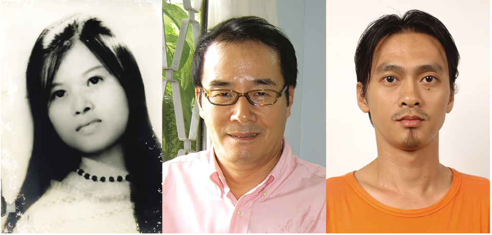
■ Nguyen Pham Trung Hau
모든 사람들은 그들이 살았던 시대에 그들만의 방식으로 애국자가 된다. 그리고 나 또한 나의 방식으로 내 국가를 사랑한다. 난 내 일생에서 그녀(작품 HER)를 만나 본 적이 없다. 그(HIM)는 4개월 전에 다른 곳으로 이사를 갔고, 그의 사업은 잘 되가고 있다. 그녀(Her)는 우리 아버지의 동생이고, 그(Him)는 전에 살던 우리 가족의 이웃이다. 그리고 나(Me)는 Nguyen Pham Trung Hau이다.
HER:
- 1942년 베트남 중심인 Quang Nam 성에서 태어났다.
- 마을군의 부의장 일과, Quang Nam도 Dien Ban구 Dien Hoa Commune에서 정치 선전투쟁의 지도자 일을 했다.
- 1967년 1월 29일 한국 군인들에 의해 심하게 상해를 입었다.
- Danang 병원에서 미군의 치료를 전면적으로 거부했고, 병원 옷을 찢고, 약물 투여를 거부하고, 단식투쟁을 하다가 결국 이틀 후에 사망했다.
- 3개월 된 태아도 엄마와 함께 저 세상으로 갔고, 그 아이는 그녀의 첫 아이였다.
- 그녀의 남편도 1년 후에 죽어서 고향에 묻히게 되었다.
- 그녀는 현재 Quang Nam도 Dien Ban구의 희생자 묘지에 안치되어 있다.
- 그녀는 2002년 도에서 수여하는 “군사영웅”이라는 상을 수상했다.
- 그녀의 이름은 Nguyen Thi Sau이다. 그녀의 성 Nguyen은 베트남에서 가장 흔한 성이다.
HIM:
- 1955년 남한 울산에서 태어났다.
- 울산 대학 1학년 때 군입대 했다.
- 1978년 제대해서 미국 메릴랜드 주로 유학 가서 경영학을 공부했다.
- 1980년 한국으로 돌아와 일본, 홍콩, 싱가포르에 있는 회사들과 함께 국제 광고일을 했다.
- 1986년 Meeting & Conventions라는 잡지를 출판했다.
- 1993년에는 영어와 일본어판 엑스포 가이드 지도의 편집자로 대전 세계 엑스포에서 일했다.
- 1993년 베트남의 청년 연합이 개최한 제1회 젊은 사업가들 컨퍼런스에 Conventtion & Meeting 이라는 국제적인 조직을 지원하기 위해 베트남에 방문했다.
- 1994년 호치민시에 아웃도어(outdoor) 광고 회사를 설립했다.
- 1999년 베트남에 있는 사업을 철수하고 한국으로 돌아갔다.
- 2004년 베트남으로 다시 돌아와 전자상거래 사업을 준비하기 시작했다.
- 2005년 한국 포장용 김치를 생산하는 식품 회사를 설립했고 베트남 각지로 뻗어 나갔다.
- 2006년 ‘김밥과 비빔밥’이라는 한국 음식을 호치민 시에 프랜차이즈 시스템으로 설립하기 위해 준비했다.
- 그의 이름은 김태곤이다. 그의 성 김은 한국에서 가장 흔한 성이다.
ME:
- 1972년 베트남 남부 사이공에서 태어났다.
- 2000년 호치민시 미술대학을 졸업했다.
- 처음 한국에 대해서는, 수출 산업 존에서 외국인 노동자들에 대한 한국 고용주들의 학대에 관한 기사를 읽고 매우 안 좋은 인상을 가지고 있었다.
- 약 10년 전에 한국 영화 “노랑 머리”를 보았다.
- 1996년 호치민시에 있는 외국계 광고 회사에서 일하다가 캐나다 국적의 한국인 여자를 알게 되었다. 그녀의 남자친구는 프랑스 국적을 가지고 있는 베트남 사람이었다.
- 2003년 베트남 시장 진출을 위해 침구류를 생산하는 한국 회사에서 일했다. 베트남어를 유창하게 했던 한국인 매니저는 사무를 보던 베트남 여자와 결혼했다. 그들은 아들을 낳았다.
- 2004년 서울에서 열린 제 10회 퍼포먼스 아트 콩그레와 광주비엔날레에 초청받았다.
- 호치민 시에 있는 한국 대사관에 한국 비자 신청을 했을 때 나는 한국인들과 결혼하기 위해 줄을 서 있는 많은 베트남 여자들을 보았다.
- 서울에서 한 한국인 작가 친구로부터 베트남 전쟁에 참전했던 한국 남자가 정신 질환을 겪고 있다는 이야기를 들었다.
- 기회가 다시 한 번 주어진다면 나는 한국에 다시 방문하고 싶다.
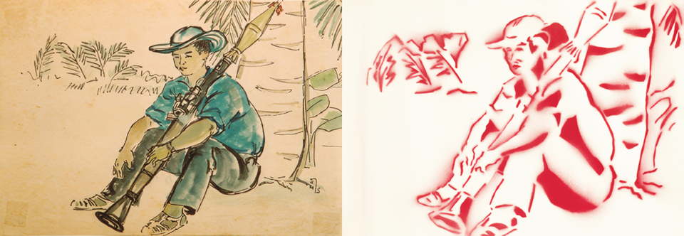
■ Nguyen Duc Thinh(응우옌 득 팅)
나는 베트남 전쟁이 끝나고 4년 뒤인 1979년에 태어났다. 베트남 전쟁에 대해서는 학교에서 역사수업과 어른들의 이야기를 통해 전해들을 수 있었다. 평화로운 시대에 태어난 우리 세대는 매우 행복하다. 나에게 비친 베트남 전쟁의 이미지는 항상 다른 나라로부터의 침공을 지키는 오랜 기간의 영웅적이고 드라마 같은 역사로 다가온다. 이번 “평화 위를 걷다” 프로젝트에 참가하면서 나는 나의 아버지가 그리신 작품에 그래피티 기법으로 스프레이를 뿌려 다시 그리는 작업을 했다. 나의 아버지는 베트남 전쟁당시 Ben tre 전쟁터에서 화가이자 군인으로 계셨다. 아버지가 그리신 그림 속의 사람은 B41 총을 사용하고 있는 사격수이다. 그의 이름은 Cong Thanh으로 성공이라는 의미를 가지고 있다. 우리 아버지 말씀에 의하면, B41 사격수는 1973년 Ben tre에서의 전쟁 후에 사망했다고 한다. 그 사격수는 매우 젊은 사람이었고, 아버지께서 그를 그리시는 동안 그는 자신의 B41 총을 지니고 아주 얌전히 앉아 있었다고 한다. 나는 아버지께 물었다. “왜 그 남자는 아주 맹렬한 전쟁통임에도 그렇게 고요하게 있을 수 있었을까요?” “전쟁이 매일 벌어지고 있었기 때문에 그는 전쟁에 매우 익숙했던 거야. 일종의 일상으로 여겨졌던 거지.” 아버지께서 말씀하셨다.
I was born in 1979, 4 years after the end of Vietnamese war. When I was child, the Vietnamese war came to me through history lessons at school and the story of the elders. My generation is very happy when being born in peace time and my own Vietnamese war image is always attached with Vietnamese long heroic and dramatic history of defense of invasion from outside. My work participating in this project, “Pace to the Peace” is my re-draw of my father’s art work by spraying in grafiti manner. My father has work ed as a role of a painter and soldier in Ben tre battle area during the war time. The person in my father drawing is a gunner using B41 gun. His name is Cong Thanh( English meaning as successfulness). My father told me that the portrait of B41 gunner was completed after a battle in Ben tre at 1973. The young gunner sat very calmly with his B41 gun when my father was drawing him. I have asked my father :“Why this guy could be very calm after a kind of an very fierce battle?” “The battles continueded everyday why they are very familiar to it and they considered it like a everyday life matter”, my father said.
Nguyen Duc Thinh은 그래피티 작업을 하고 있는 젊은 작가이다. 그에게 그래피티 아트는 선과 색 중에서 양자택일을 요하는 작업이다. 그는 그래피티 아트가 아웃사이더 예술이 아닌 공식적인 예술로 여겨질 수 있기를 바라고 있다. 그래피티 아트에 대한 소신을 밝히기 위해 그와 그의 동료들은 2006년 호치민 시에서 주최한 그래피티 경연대회에 참가해 매우 높은 상을 수상하기도 했다. 최근에는 공식적인 순수 미술 전시회에 그래피티 아트를 성공적으로 선보였고, 그의 작품 또한 관객들로부터 매우 좋은 반응을 얻었다. 그는 Arrow 그룹의 작가로 많은 그룹전에도 참가하고 있다.
Nguyen Duc Thinh is a young artist who is practicing in grafiti art. For him, grafiti art demands highly the alternativeness of lines and colors. He hopes grafiti art can be considered official art but not outside one. To prove his opinion about grafiti art, he and his collegues have participated in and reached highly awards in grafiti contests held at Hochiminh city 2005. The most recently, he has succeed in bringing grafiti art into official exhibitions and his art work also has got so much good respond from audience. Besides, as a member of Arrow group, a young Saigoness contemporary artist, he also has been participating in many exhibition of his group.
Address: 214 Nguyen Dinh Chinh, ward 11, Phu Nhuan district
Cell: +84 908337194
Email: hcmcrew@yahoo.com
Email: dabcrew@gmail.com
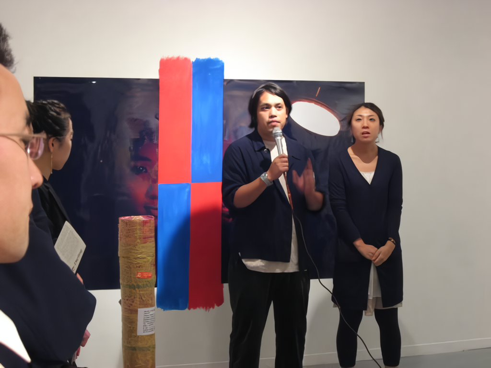 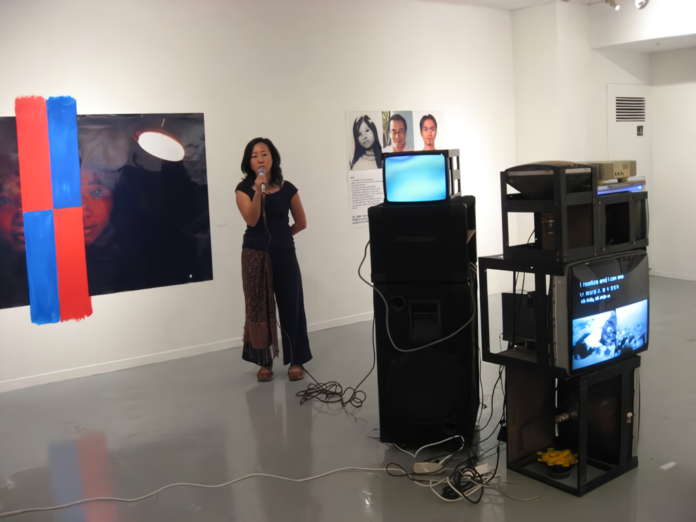 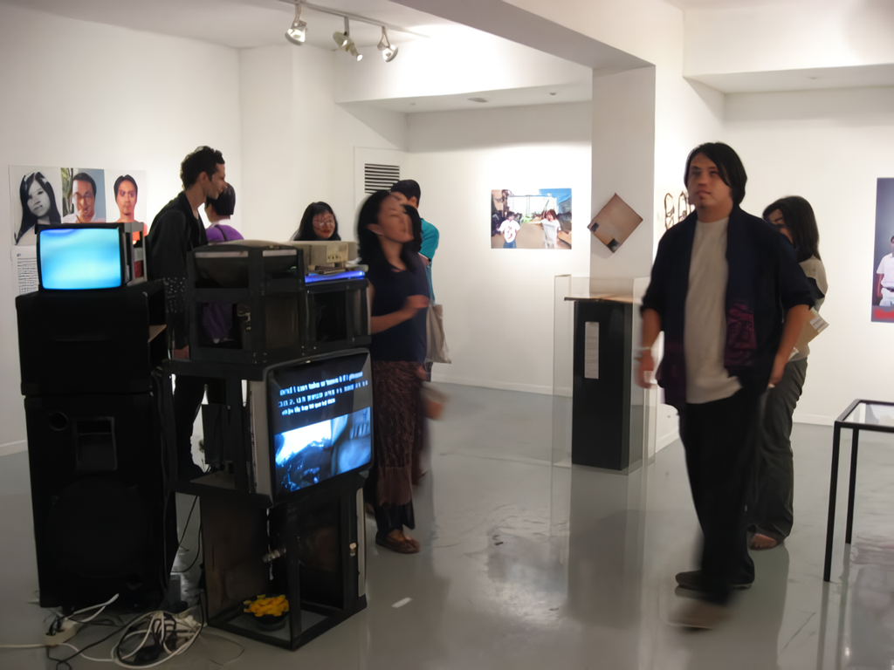 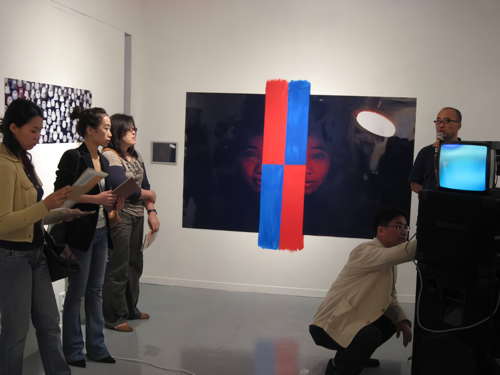 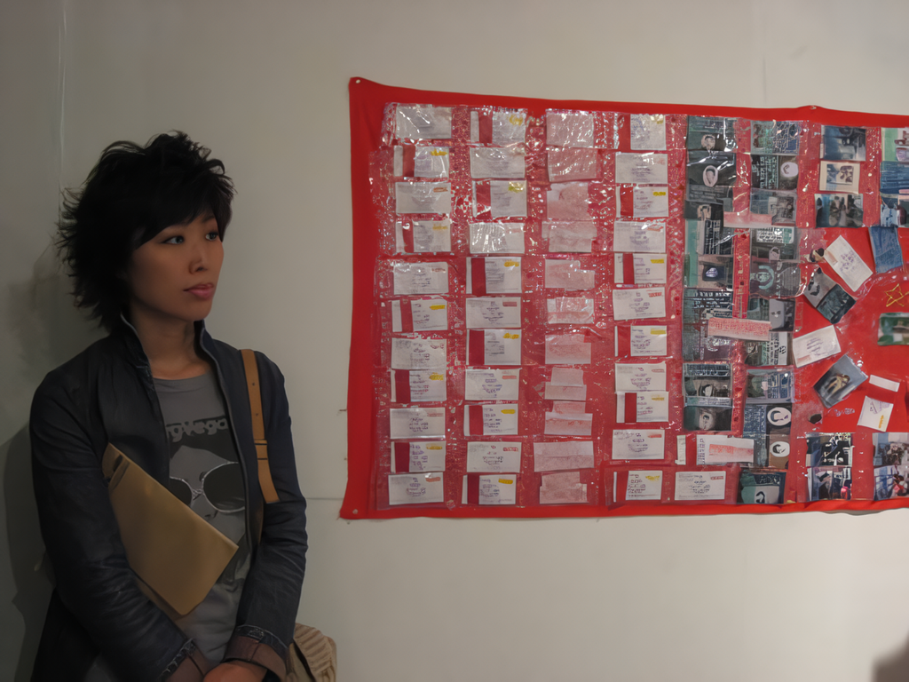 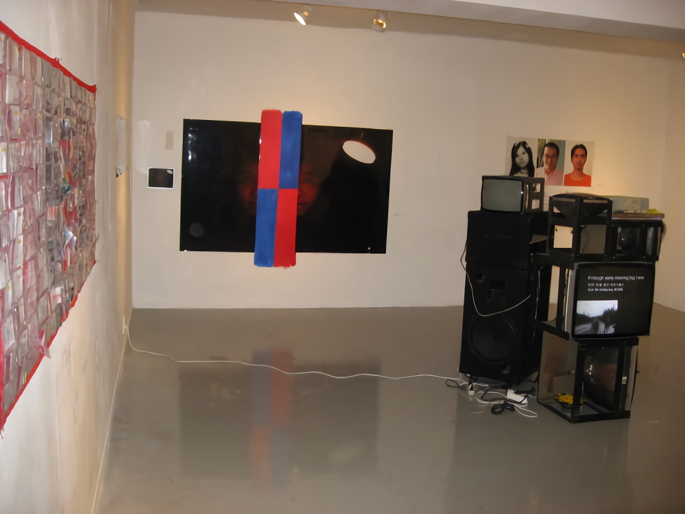 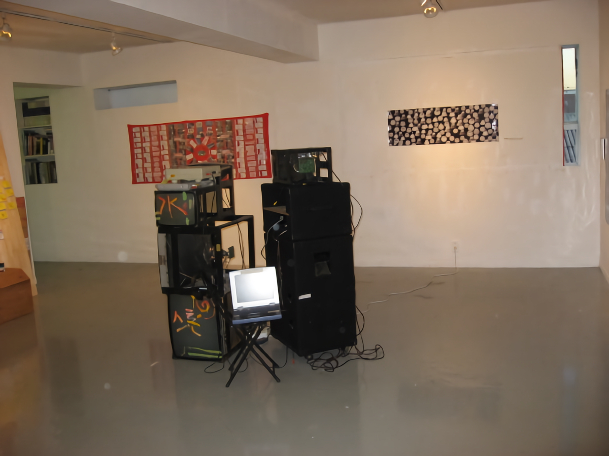 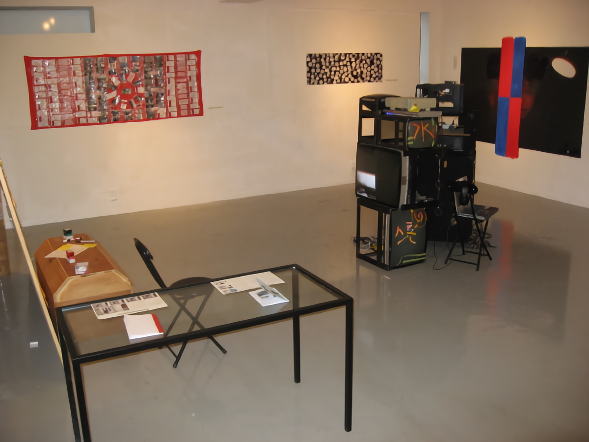
주최 : 보충대리공간 스톤앤워터
주관 : 평화 위를 걷다 프로젝트 기획단
후원 : 문화예술위원회, 안양시
책임기획 : 김강
협력 큐레이터 : 박찬응, Nguyen Nhu' Huy
코디네이터 : 오사라, 노진